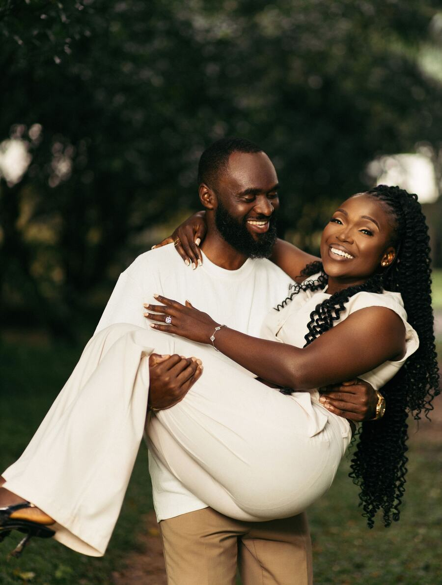

Bridal Procession

Abigail & Jerry
Our Love Story
“Every love story is beautiful, but ours is our favourite.”
Ours didn’t begin with a grand moment or a perfect plan. It began simply by meeting Solomon and Francis, who, over time, brought me into their family. I became a very good friend of the family, and before long, their home became a home away from home for me.
Days turned into months, and months into years. Through friendship, faith, laughter and unwavering support, our bond kept growing stronger. I was simply enjoying the friendship, until somewhere along the journey, Abigail and I became close friends.
We became woven into each other’s everyday lives. We laughed, had long gist-filled calls, shared the details of our days, our challenges, our laughter, our dreams and everything in between.
Over time, we became each other’s safe place, offering support, wisdom, presence and consistency through both the big moments and the ordinary ones.
What started as friendship slowly grew into a deeper connection. We talked, understood each other, got to know each other more, and somewhere along the way, we discovered something beautiful in one another.
Friendship had quietly become love.
And when that realization came, I knew I had to tell her family. Honestly, that was one of my biggest challenges.
I had so many thoughts and fears. How do I tell my friends, “O boy, I like your sister ooo, and I want to have a relationship with her”?
“Ah! You want to break BRO CODE?”
Or, “Mummy, I like your daughter.” Hmmmmm.
I didn’t want to lose the beautiful friendship and relationship I had built with the family in the process. I had so much love and respect for them, and the thought of anything changing because of my intentions was a genuine fear.
But eventually, I summoned the courage and spoke to the family about my intentions.
And surprisingly, they accepted me with open hearts and gave me their blessings. In fact, they were happy.
From there, everything began to fall into place.
The journey began.
Abigail became more than someone I loved. She became someone I could see myself doing life with, someone whose presence brought a different kind of peace, purpose and joy.
Our journey hasn’t been without its challenges, but every season has taught us something about love, patience, forgiveness, faith and, most importantly, choosing each other.
And perhaps the most beautiful part of our story is knowing that this isn’t the end of it. It is only the beginning of a new chapter.
A meeting was held. Questions were asked. Families were visited. Traditions were honoured. There was a proposal, a joyful send-forth, the dowry rites, and now, here we are.
From two people who found each other, to two families becoming one, this is the beautiful journey that has brought us here today.
This is our story and by God’s grace, the best chapters are still ahead.